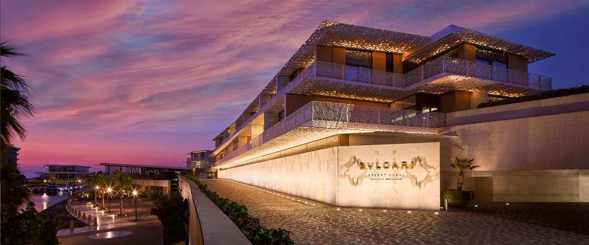

Journal
The two best months to travel are the two everyone skips.
Here is the thing nobody tells you: the same hotel, in the same place, is a meaningfully better experience in late September than it is in July. Same room. Often a lower rate. And the difference has nothing to do with luxury and everything to do with arithmetic.
In August, a hotel is full. The staff are running. The restaurant you wanted is booked out three days deep, the pool has no free chairs by nine in the morning, and the town outside is at capacity. In late September that same hotel is at maybe sixty percent. The people who work there have time to talk to you. That is the whole trick.
What autumn actually gets you
Four things, in order of how much they matter.
Attention. This is the real one. A half-full hotel is a different hotel. Requests get said yes to. The concierge remembers your name by day two. Nothing about the property changed — only how many people are competing for it.
Weather that is often simply better. The Mediterranean in September is warmer in the water and cooler in the air than it is in August. Japan in October is the single most comfortable month of its year. Dubai becomes possible again in late October after being genuinely unbearable all summer.
Rates that drop without the product dropping. The week after Labour Day is the sharpest price cliff in travel. Nothing about the hotel is worse. The calendar just moved.
Harvest. Which deserves its own section, because it is the one thing on this list you cannot get at any other time of year, at any price.
Harvest season is the actual argument
Grapes, olives, and honey — all of it happens now.
September and October are when the year's work comes in. In Tuscany and Provence and Napa the grape harvest runs from late August through October, and estates that are closed and quiet in spring are suddenly alive — pickers in the rows, the smell of fermentation, tastings straight from the tank rather than the bottle. In Italy and Greece the olive harvest follows in October, and the oil you taste in a mill that week is a different substance from the bottle you buy at home.
And then there is honey, which is the one almost nobody plans around and probably should. Late summer into early autumn is when beekeepers pull the year's supers — the frames the bees have spent the whole season filling. On working farm estates this is a genuine event. You can stand in a veil while frames come out of the hive, watch them go into the extractor, and taste honey that was in the comb an hour earlier and has never been heated or filtered. It tastes like the specific field it came from, which is a thing you simply cannot understand from a jar.
Blackberry Farm in Tennessee runs one of the better-known apiaries of any property in the country. Twin Farms in Vermont and Winvian in Connecticut are both working farms where the same rhythm applies. In Europe, estates across Tuscany, Slovenia, and the Dordogne will often let guests join the harvest if someone asks on your behalf in advance — which is precisely the kind of thing that has to be arranged rather than booked.
Where I would actually go
Six, and why that month specifically.
Japan — October

October is Japan's best month and it is not close. The summer humidity is gone, the autumn colour starts in the north and moves down, and the whole country is comfortable to walk in for the first time since spring. Tokyo as a base, then Kyoto or Hakone once the leaves turn. Book early — the Japanese travel domestically in autumn and the good ryokan go first.
The Amalfi Coast and Puglia — September
The sea has had all summer to warm up and is at its best in September, while the crowds that make Positano genuinely unpleasant in August have gone home. Boats are easier to get. The restaurants that would not take you in August will. Go after the 10th and it is a different coastline.
New England — early to mid October
The foliage is the obvious draw and it earns the attention. The less obvious point is that this is the easiest good trip on the list — no flight, no time change, no planning marathon. Vermont, the Berkshires, the Hudson Valley. If you read the piece on hotels hiding in plain sight, this is when to use it.
Provence and the Rhône — late September
Harvest, and the last properly warm weeks before the mistral arrives. Lavender is finished by then, which people mourn unnecessarily — the vineyards more than compensate, and the light in September is the reason painters moved there.
Dubai — late October onward

Dubai has a season and this is the start of it. Before late October it is genuinely too hot to enjoy being outdoors; after, the beach clubs reopen, the terraces make sense, and the city becomes the version of itself people describe. Going in October rather than December also means paying considerably less for the identical hotel.
Greece — September into early October
Same logic as Italy, slightly longer runway. The Cyclades stay swimmable into October and empty out after the first week of September. The mainland — the Peloponnese especially — is at its best exactly when everyone has stopped thinking about Greece for the year.
How to actually make it work
The three real obstacles, and what to do about each.
If you have school-age children, look at the calendar before you assume it is impossible. Most districts have a fall break, a long Columbus Day weekend, and teacher in-service days that stack into four or five days without touching a single class. That is enough for New England, enough for a short Caribbean run, and enough for one European city if you fly overnight.
If work is the constraint, September is quieter than people admit in most industries — everyone is back but nothing has ramped yet. The last two weeks of September are consistently the easiest to disappear for, far easier than anything in Q4.
If you are simply out of the habit of travelling outside summer, start domestic. Four nights somewhere within driving distance in October will tell you more about whether autumn travel suits you than any amount of deliberating.
One last thing
The best trips I plan are rarely the most expensive ones. They are the ones where the timing was right — where the hotel had room to look after someone properly, the weather cooperated, and something was happening that only happens then.
For a lot of the world, that window is open right now and closes in about eight weeks. If there is somewhere you have been meaning to get to, this is the part of the year to do it.